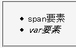
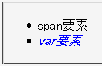

未知の擬似要素や擬似クラスを指定したセレクタは不正なものとして扱うため、これを含む宣言ブロック全体が無視される。
<style type="text/css">
span:invalid , var {
color: blue;
}
</style>
<ul>
<li><span>span要素</span></li>
<li><var>var要素</var></li>
</ul>
現在、invalidという名称の擬似要素や擬似クラスは定義されていません。
Mozilla1.7alpha標準モード
Netscape7.1標準モード
Mozilla.org Bugzillaでは以下の項目が該当します。